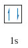
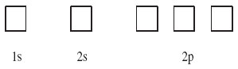
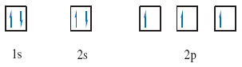
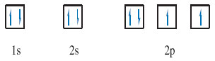

1.11. Putting electrons in boxes
At this point think back to what you know about an s sub-shell.
How many electrons are in a fully occupied s sub-shell?
Answer
As an s sub-shell contains one orbital, this means that it can contain up to two electrons.
Two such electrons with opposed spins are said to be paired and are conveniently represented in a so called box diagram.
Given a full atomic orbital can contain up to two electrons with opposing spins. This may be simply represented by writing one electron as an upward-pointing half-headed arrow, and the other as a downward pointing half-headed arrow.
And each orbital is drawn as a box into which these half-headed arrows are drawn.
For example, the helium atom has the electronic configuration 1s2. As the 1s sub-shell contains just one orbital, this can be depicted by a single box containing the two electrons (Figure 10).

Now consider the box diagram for nitrogen.
What is the electronic configuration of the nitrogen atom?
Answer
1s22s22p3
The 1s and 2s sub-shells contain one orbital each, and the 2p sub-shell contains three. The box diagram that must be filled therefore takes the form shown in Figure 11:

So how do the three 2p electrons fill the 2p sub-shell?
There are several possibilities, but the one you want is the ground-state arrangement, the state of lowest energy.
There is a simple rule, called Hund's rule, which tells you that within any sub-shell, there will be the maximum number of electrons with spins of the same sense.
Because electrons in the same box must have opposed spins, they must, as far as possible, go into different boxes with spins of the same sense, or, as it is usually termed, with parallel spins. In this case there are three 2p electrons and three boxes, so each box can take one electron with the same spin, and this is the preferred arrangement according to Hund's rule. The final result for the nitrogen atom is therefore (Figure 12):

The oxygen atom has atomic number 8. Draw a box diagram for oxygen.
Answer
As there are four 2p electrons and only three 2p boxes, the fourth 2p electron cannot have a spin parallel to the other three. It must go into a box that is already occupied by one electron with opposite spin (Figure 13):

OpenLearn - Discovering chemistry
 Except for third party materials and otherwise, this content is made available under a Creative Commons Attribution-NonCommercial-ShareAlike 4.0 Licence, full copyright detail can be found in the acknowledgements section. Please see full copyright statement for details.
Except for third party materials and otherwise, this content is made available under a Creative Commons Attribution-NonCommercial-ShareAlike 4.0 Licence, full copyright detail can be found in the acknowledgements section. Please see full copyright statement for details.